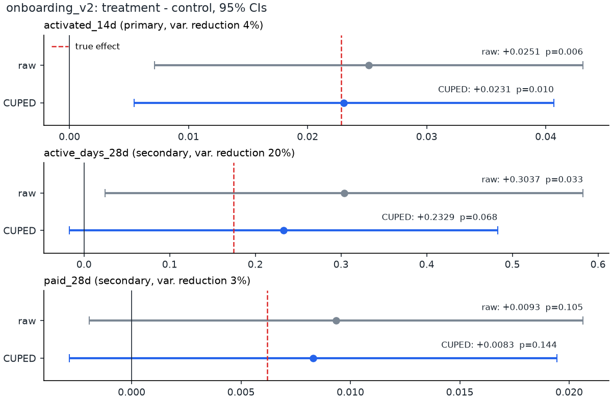
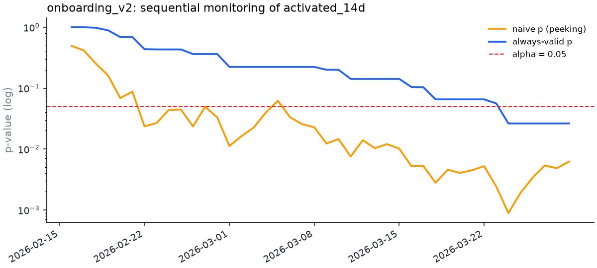
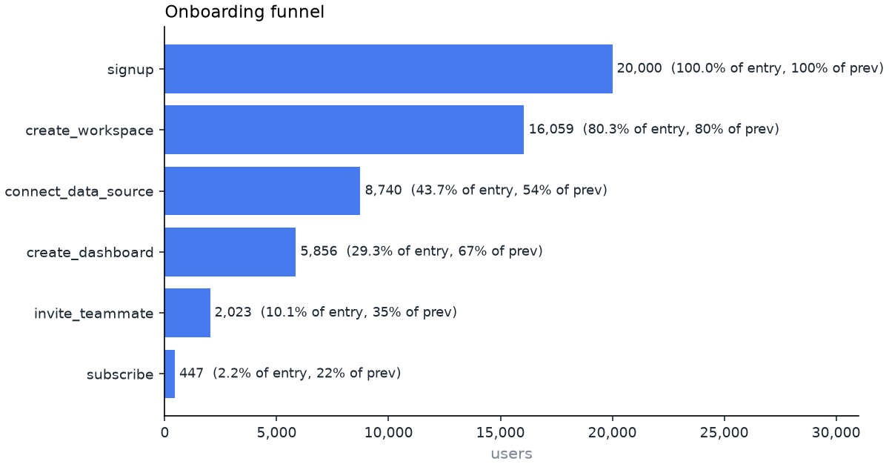
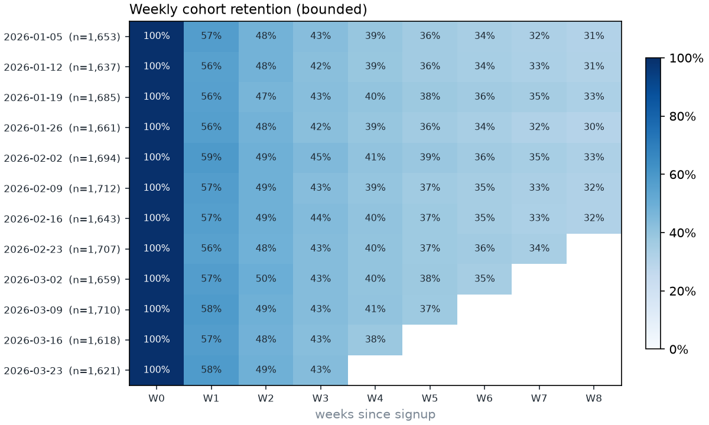

Open-source · Python 3.11+ · DuckDB + Parquet
A/B readouts that refuse to be misread.
plg-metrics turns raw product events into ordered funnels, cohort retention, activation candidates, and an experiment readout that checks sample-ratio mismatch first, reduces variance with CUPED, corrects for multiple metrics, and guards against peeking. Every statistic is checked against a synthetic dataset whose true effect is known.

Quickstart
Requires Python 3.11+ and uv. Everything runs offline; no API keys or external data.
git clone https://github.com/seanmcrae/plg-metrics.git
cd plg-metrics
uv sync --extra dev --locked
uv run plg generate # 20,000 synthetic users -> data/synthetic/
uv run plg experiment onboarding_v2 # full A/B readout
uv run plg funnel --by plan # ordered funnel, 14-day window
uv run plg retention --mode unbounded # weekly cohort matrix
uv run plg activation # early behaviors vs week-4 retention
uv run plg power --baseline 0.29 --mde 0.02 --daily-units 240
make dashboard # Streamlit: funnel, retention, experiment tabs
make site # rebuild this site into site/Results
Output below was produced by the build that generated this page, on data/synthetic (SYNTHETIC).
Experiment readout
The readout runs the SRM check before any estimate, prints raw and CUPED estimates side by side, tests the pre-registered primary at alpha and corrects the secondaries as a family, and shows where naive daily peeking would have stopped (look 7 of 42) versus the first stop the always-valid test allows (look 37).
$ plg experiment onboarding_v2
Experiment: onboarding_v2 data: data/synthetic (SYNTHETIC)
Units: control 4,916 | treatment 5,042
SRM check: chi2 = 1.59, p = 0.207 -> OK (flag if p < 0.001)
metric role control treatment raw diff raw p CUPED diff 95% CI CUPED p p_adj var red truth in CI
--------------- --------- ------- --------- -------- ------ ---------- ------------------ ------- ------ ------- ------- -----
activated_14d primary 0.2878 0.3130 +0.0251 0.0062 +0.0231 [+0.0054, +0.0407] 0.0104 0.0104 4.1% +0.0228 yes
active_days_28d secondary 7.2445 7.5482 +0.3037 0.0329 +0.2329 [-0.0170, +0.4827] 0.0677 0.1354 19.8% +0.1748 yes
paid_28d secondary 0.0862 0.0956 +0.0093 0.1046 +0.0083 [-0.0028, +0.0194] 0.1442 0.1442 2.6% +0.0062 yes
CUPED covariate: pre_pageviews; 95% CI is for the CUPED diff. p_adj: holm on CUPED p across secondary metrics; primary tested at alpha.
Bayesian (activated_14d, Beta(1,1) prior): P(treatment > control) = 99.7%, 95% credible diff [+0.0071, +0.0431], expected loss if shipped = 0.00001
Sequential guardrail (mSPRT, tau = 0.02): final always-valid p = 0.0263; first safe stop: 2026-03-24 (look 37 of 42).
Naive daily peeking at p < 0.05 would have stopped: 2026-02-22 (look 7 of 42).
Power: baseline 28.8%, 4,916 per arm -> MDE at 80% power = 2.59 pp
Decision: SHIP: activated_14d improved with no significant regressions
Funnel and retention


$ plg funnel --by plan
Funnel (14-day window) data: data/synthetic (SYNTHETIC)
step users conv_from_start conv_from_prev
------------------- ----- --------------- --------------
signup 20000 100.0% 100.0%
create_workspace 16059 80.3% 80.3%
connect_data_source 8740 43.7% 54.4%
create_dashboard 5856 29.3% 67.0%
invite_teammate 2023 10.1% 34.5%
subscribe 447 2.2% 22.1%
Conversion from entry by plan
step free trial
------------------- ------ ------
signup 100.0% 100.0%
create_workspace 79.5% 82.2%
connect_data_source 41.7% 48.5%
create_dashboard 27.9% 32.5%
invite_teammate 9.7% 11.0%
subscribe 1.7% 3.4%
Hours from entry to step (converters only)
step converters mean_hours p50 p75 p90
------------------- ---------- ---------- ----- ----- -----
create_workspace 16059 0.5 0.3 0.6 1.1
connect_data_source 8740 40.9 19.1 49.3 108.6
create_dashboard 5856 87.7 63.7 122.1 200.1
invite_teammate 2023 142.6 125.8 195.5 262.5
subscribe 447 224.1 230.9 281.0 316.5Activation search
Candidate activation rules ranked by F1 against week-4 retention. These are correlations: a shortlist for an experiment, not a causal claim.
$ plg activation --top 6
Activation search (target: active in days 21-27) data: data/synthetic (SYNTHETIC)
Base week-4 retention: 43.2%
rule coverage precision retention_without recall lift f1
------------------------------------ -------- --------- ----------------- ------ ---- -----
session_start >= 3 in first 7d 58.2% 66.1% 11.3% 89.1% 1.53 0.759
session_start >= 2 in first 7d 73.7% 57.0% 4.5% 97.3% 1.32 0.719
add_chart >= 1 in first 7d 36.7% 71.4% 26.9% 60.7% 1.65 0.656
connect_data_source >= 1 in first 7d 41.7% 62.9% 29.1% 60.7% 1.46 0.618
session_start >= 5 in first 7d 25.6% 80.8% 30.3% 47.9% 1.87 0.602
view_docs >= 1 in first 7d 38.9% 62.4% 31.0% 56.2% 1.44 0.592How evaluation works
The synthetic generator computes each enrolled user's expected outcome under both arms from the same probabilities it samples from, so every dataset carries an analytic true effect. make validate regenerates the dataset under 100 seeds (20,000 users each), runs the full readout, and records whether each interval covers the truth. Nominal coverage is 95%; one Monte Carlo standard error at 100 seeds is about 2.2 points.
| metric | mean true effect | mean CUPED bias | raw CI coverage | CUPED CI coverage | CUPED SE / raw SE | power |
|---|---|---|---|---|---|---|
activated_14d | 0.0228 | -0.0008 | 93% | 92% | 0.979 | 68% |
active_days_28d | 0.1751 | -0.0307 | 96% | 93% | 0.889 | 20% |
paid_28d | 0.0062 | +0.0001 | 96% | 95% | 0.986 | 17% |
Decisions across seeds: SHIP 68, INCONCLUSIVE 32. A/A peeking (2,000 sims, 30 daily looks): naive false-positive rate 28.4%, mSPRT 0.9%.
Unit tests check every statistic against scipy or hand calculations, CUPED interval coverage by simulation on skewed counts, SRM detection on a generator that drops treatment logs, and that an A/A dataset never produces a SHIP decision.
Architecture

Mermaid source
flowchart LR
gen["synthetic.py<br/>seeded generator<br/>+ ground truth"] --> pq[("Parquet<br/>users / events / assignments")]
pq --> wh["store.Warehouse<br/>DuckDB views"]
sql["sql/*.sql<br/>+ funnel query builder"] --> wh
wh --> fun["funnel.py"]
wh --> ret["retention.py"]
wh --> eng["engagement.py"]
wh --> act["activation.py"]
wh --> exp["experiment.py"]
stats["stats/<br/>frequentist, cuped, multiple,<br/>sequential, bayes, power"] --> exp
gen --> val["validation.py<br/>multi-seed ground truth"]
exp --> val
fun & ret & eng & act & exp --> rep["reports.py<br/>plain-text readouts"]
fun & ret & exp --> plots["plots.py<br/>matplotlib charts"]
rep --> cli["cli.py (typer)"]
plots --> dash["dashboard.py (Streamlit)"]
rep & plots & val --> site["sitegen/<br/>static site for Pages"]
Design decisions
- Funnel semantics are explicit. Entry is the first occurrence of step 0 in the entry period; each later step must occur at or after the previous matched step and within the window measured from entry. Matching the earliest qualifying event is optimal, so the funnel never undercounts a user who had a valid ordered path. Tied timestamps satisfy ordering because batch loggers often stamp consecutive events identically. All of these cases have unit tests.
- Retention never shows a zero it has not observed. Cells a cohort has not fully lived through are blank, and the weighted curve averages complete cells only. Bounded ("active in week N") and unbounded ("active in week N or later") retention are separate modes because they answer different questions.
- Integrity before results. The SRM check runs first at p < 0.001; a mismatch turns the decision into INVALID regardless of the metrics.
- CUPED by default with a pre-treatment covariate (marketing pageviews in the 14 days before signup). Theta is estimated on the pooled sample, which keeps the estimator unbiased; raw estimates are always printed alongside.
- Correction family. The pre-registered primary metric is tested at alpha; Holm (default) or Benjamini-Hochberg adjusts the secondaries. Adding a secondary metric therefore never weakens the primary decision, and fishing among secondaries is still penalized. Any significant regression blocks a ship.
- Sequential testing via mSPRT (Johari et al., 2017) rather than alpha spending: it needs no pre-committed number of looks, which matches how teams actually check dashboards. Looks are indexed by enrollment day, with each user scored on a matured outcome window.
- Bayesian next to frequentist. P(treatment > control) uses the exact closed form for Beta posteriors, not sampling; the credible interval and expected loss use seeded Monte Carlo so output is reproducible.
- Ground truth is analytic. The generator computes each enrolled user's expected outcome under both arms from the same probabilities it samples from, so "truth" is not another noisy simulation.
Limitations
- All results are on synthetic data; see the failure table above for what that leaves untested.
- Signups in the synthetic world stop after week 12, so the last weeks of the stickiness and north-star series reflect an ageing user base with no new acquisition, not product decline.
- Activation search output is a shortlist of correlations; adopting a rule as the activation metric needs judgement and then an experiment.
- Users are the unit everywhere. Account-level (workspace) analysis and cluster-robust errors for multi-user accounts are not implemented.
- Delta-method intervals are used for relative lift; for very small baselines a Fieller or bootstrap interval would be safer.
- CUPED intervals treat theta as known. At thousands of users per arm the effect on coverage is negligible; on very small samples it is not.
- DuckDB runs in-process on one machine. That is comfortable for tens of millions of events, not for a warehouse-scale event table.
Problem framing, users, success metrics, trade-offs and the roadmap are in the product brief.